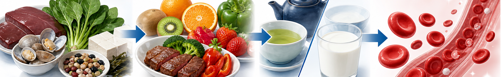

한눈에 보는 핵심 수치
한국 가임기 여성 유병률
23%
4명 중 1명 (KNHANES)
진단 기준 (Hb)
<12
여성 g/dL · 남성 <13
페리틴 목표
≥100
ng/mL (저장철 회복)
일일 권장 섭취 (Fe)
18 / 8
mg · 가임여성 / 남성
헴철 vs 비헴철 — 흡수율 3배 차이
헴철 (Heme Iron) · 흡수율 15~35%
- 1. 소고기 안심·등심 100g — Fe 2.6mg (붉은 살코기)
- 2. 돼지고기 안심 100g — Fe 1.1mg (지방 적은 부위)
- 3. 닭고기 다리살 100g — Fe 1.3mg (가슴살보다 ↑)
- 4. 굴 (Oyster) 100g — Fe 7mg (자연계 최고)
- 5. 바지락·홍합 100g — Fe 3~6mg (조개류)
- 6. 간 (소·돼지) 50g — Fe 6mg (단, 임신부 주의)
- 7. 정어리·고등어 100g — Fe 1.5~2.7mg
비헴철 (Non-Heme Iron) · 흡수율 2~20%
- 1. 시금치·근대 100g — Fe 2.7mg (반드시 데쳐서)
- 2. 검은콩·렌틸콩 100g — Fe 6~7mg (식물성 1위)
- 3. 두부 100g — Fe 1.5mg (단백질 보조)
- 4. 달걀 노른자 1개 — Fe 1mg (간편 보충)
- 5. 검은깨·들깨 1큰술 — Fe 1.4mg (요거트 토핑)
- 6. 건자두·건포도 30g — Fe 1mg (간식 대체)
- 7. 호박씨·해바라기씨 30g — Fe 2.3mg
철분 흡수 도우미 vs 방해꾼
시너지 · 함께 드세요
- 비타민 C — 흡수율 약 2배 ↑ (오렌지·키위·딸기·파프리카)
- 구연산·유기산 — 식초·레몬즙 곁들이기
- 육류 인자 (Meat Factor) — 채소+고기 동시 섭취 시 비헴철 흡수 ↑
- 식간 공복 복용 — 철분제는 식사 1시간 전 / 식후 2시간 후
흡수 방해 · 식후 2시간 피하기
- 커피·녹차·홍차 (탄닌) — 흡수율 60% ↓, 식후 2시간 후
- 우유·요거트·치즈 (칼슘) — 철분과 흡수 경쟁
- PPI·제산제 (위산 차단제) — 비헴철 흡수 급감, 의사 상담
- 통밀·콩 피틴산 / 시금치 옥살산 — 데치기 + 비타민 C로 상쇄